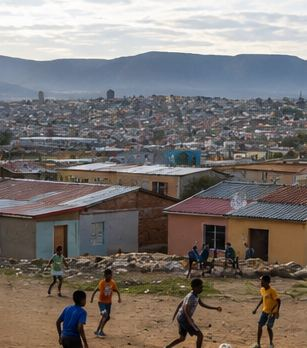

You have a hustle in progress.
Hustle
You are unemployed in KwaDream with R2,500 and a dream.
Read the street. Pick your shot. Write the plan. Then survive 14 days of business reality — load shedding, late suppliers, and customers who pay next week. Every choice carries forward.
Choose your mode
NQF Level 2 · SAQA 49648 · NVC Learnership

Build your hustle
Before you spend a single rand, know yourself. These four traits follow you into every stage — the Scanner, the plan, and the crisis.
Everyone starts at 2. Spend all 12 to unlock the reveal.
Scan the street
Tap a spot to scan it. Each one reads differently before you scan — that is the point.
Opportunities
Write the plan
Survive the cash flow crisis
Your result
Your 14 days
Every day, every choice, every rand.

Soweto, Orlando West — the streets the fiction is drawn from.
Prototype shell — all four stages. Vanilla JS standing in for the React tree. The game content (opportunities, plan questions, all 14 crisis days, lesson cards, ending bands) is the real authored content extracted from the deployed bundle; only the shell is new.
Demonstrates every P0/P1/P2 fix: legible primary CTA on both gradient stops, save and
resume, real back-button routing, one DAYS constant driving every counter,
16px type floor, 52px steppers, focus rings, heading hierarchy, labelled scanner cards,
data-gated video, reduced-motion degradation.
One deliberate simplification: the shipped build picks one of three variants per day at random. This prototype always takes the first, so a facilitator can reproduce a run. The randomiser is one line and is marked in the source.